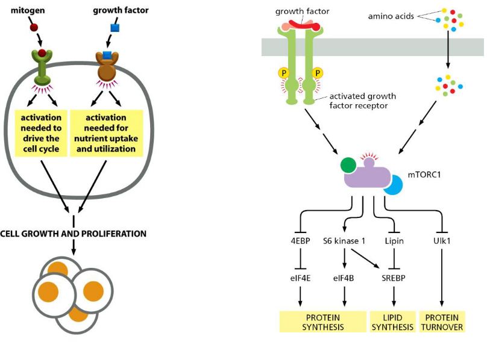
7 Singalling Pathways and Telomeres in Aging
7.1 Signalling Pathways
mTORC1 (mechanistic target of rapamycin complex 1) is a central regulator of cell growth, metabolism, and proliferation in response to various environmental cues, including nutrient availability, energy status, growth factors, and stress signals. Here’s how mTORC1 regulates cell growth:
Nutrient Sensing: mTORC1 acts as a nutrient sensor, integrating signals from amino acids, glucose, lipids, and other metabolites to regulate cellular metabolism and growth. Amino acids, particularly leucine and arginine, are potent activators of mTORC1, promoting its translocation to the lysosomal membrane where it becomes activated.
Activation by Growth Factors: Growth factors such as insulin, insulin-like growth factor 1 (IGF-1), and epidermal growth factor (EGF) activate mTORC1 signaling through the phosphoinositide 3-kinase (PI3K)/Akt pathway. Upon growth factor stimulation, Akt phosphorylates and inhibits tuberous sclerosis complex 2 (TSC2), relieving its inhibitory effect on mTORC1 and promoting its activation.
Cellular Energy Status: mTORC1 activity is also influenced by cellular energy levels, particularly through the AMP-activated protein kinase (AMPK) pathway. AMPK, a sensor of cellular energy depletion, inhibits mTORC1 by phosphorylating TSC2 and raptor, leading to mTORC1 inhibition and energy conservation during metabolic stress.
Regulation of Protein Synthesis: mTORC1 promotes protein synthesis by phosphorylating and activating key downstream effectors, including ribosomal protein S6 kinase 1 (S6K1) and eukaryotic initiation factor 4E-binding protein 1 (4E-BP1). Activation of S6K1 leads to the phosphorylation of ribosomal proteins and the initiation factors involved in mRNA translation, while phosphorylation of 4E-BP1 releases it from eukaryotic initiation factor 4E (eIF4E), allowing it to initiate cap-dependent translation.
Lipid Biosynthesis and Lipogenesis: mTORC1 promotes lipid biosynthesis and lipogenesis by activating sterol regulatory element-binding proteins (SREBPs) and promoting the transcription of genes involved in fatty acid and cholesterol synthesis. This supports the increased demand for membrane biogenesis and lipid storage during cell growth and proliferation.
Cell Cycle Progression: mTORC1 signaling promotes cell cycle progression by regulating the expression of cyclins, cyclin-dependent kinases (CDKs), and cell cycle inhibitors. Activation of mTORC1 promotes entry into the cell cycle and progression through the G1 phase, facilitating cell growth and proliferation.
7.1.1 mTORC1 and mTORC2
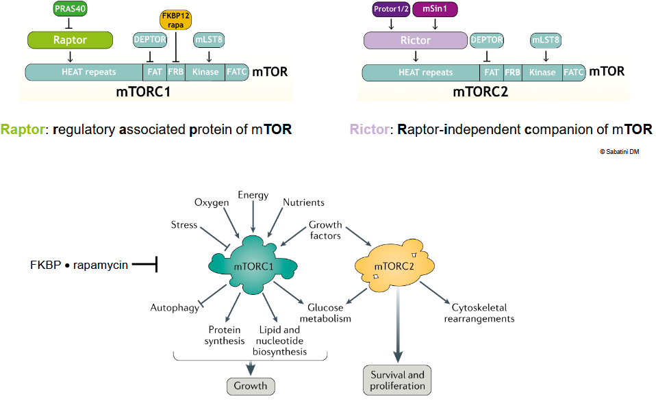
mTOR (mechanistic target of rapamycin) exists in two distinct complexes: mTORC1 and mTORC2. While both complexes share the mTOR kinase as a core component, they have different compositions, substrates, and cellular functions. Here’s an overview of mTORC1 and mTORC2:
- mTORC1 (mechanistic target of rapamycin complex 1):
- Composition: mTORC1 consists of mTOR, regulatory-associated protein of mTOR (RAPTOR), mammalian lethal with SEC13 protein 8 (mLST8), proline-rich Akt substrate 40 kDa (PRAS40), and DEP domain-containing mTOR-interacting protein (DEPTOR).
- Activation: mTORC1 is primarily activated by growth factors, amino acids, energy status, and stress signals. Growth factors such as insulin and insulin-like growth factor 1 (IGF-1) activate mTORC1 through the PI3K/Akt pathway, while amino acids, particularly leucine, activate mTORC1 by promoting its translocation to the lysosomal membrane.
- Substrates and Functions: mTORC1 regulates protein synthesis, lipid metabolism, autophagy, and cell growth by phosphorylating downstream effectors such as ribosomal protein S6 kinase 1 (S6K1) and eukaryotic initiation factor 4E-binding protein 1 (4E-BP1). Activation of mTORC1 promotes protein synthesis, lipid biosynthesis, and cell proliferation, while inhibiting autophagy.
- mTORC2 (mechanistic target of rapamycin complex 2):
- Composition: mTORC2 consists of mTOR, rapamycin-insensitive companion of mTOR (RICTOR), mammalian stress-activated protein kinase-interacting protein 1 (mSIN1), protein observed with RICTOR 1 and 2 (PROTOR1/2), and mLST8.
- Activation: mTORC2 is less well understood than mTORC1, but it is activated by growth factors and regulates cell survival, cytoskeletal organization, and metabolism. Growth factor stimulation activates mTORC2 through PI3K/Akt pathway-dependent mechanisms.
- Substrates and Functions: mTORC2 phosphorylates downstream effectors such as Akt at Serine 473 (Ser473), protein kinase C (PKC), and serum- and glucocorticoid-inducible kinase 1 (SGK1). Akt phosphorylation by mTORC2 at Ser473 enhances its kinase activity and promotes cell survival, proliferation, and metabolism. Additionally, mTORC2 regulates cytoskeletal dynamics and cell migration through its effects on PKC and SGK1.
7.1.2 mTORC1 Inhibits Autophagy
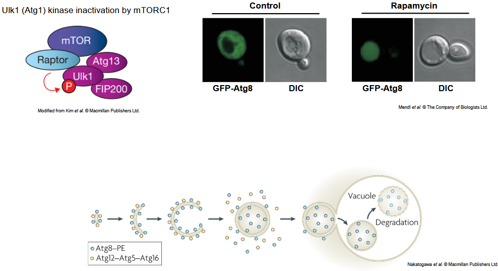
Yes, mTORC1 (mechanistic target of rapamycin complex 1) is a potent inhibitor of autophagy, a cellular process responsible for the degradation and recycling of damaged or unnecessary cellular components. Here’s how mTORC1 inhibits autophagy:
Regulation of Autophagy Initiation: mTORC1 negatively regulates the initiation of autophagy by phosphorylating and inhibiting key components of the autophagy machinery, including the Unc-51-like kinase 1 (ULK1) complex. ULK1 is a key initiator of autophagy, and its activity is inhibited by phosphorylation by mTORC1. When mTORC1 is active, it phosphorylates ULK1 and inhibits its kinase activity, thereby suppressing the initiation of autophagy.
Inhibition of Autophagy Induction: mTORC1 also inhibits autophagy induction by regulating the activity of transcription factors involved in the expression of autophagy-related genes. For example, mTORC1 phosphorylates and inhibits the transcription factor EB (TFEB), a master regulator of lysosomal and autophagy gene expression. Inhibition of TFEB by mTORC1 prevents the transcriptional upregulation of genes involved in lysosome biogenesis and autophagy, thereby suppressing autophagy induction.
Regulation of Autophagosome Formation: In addition to its effects on autophagy initiation and induction, mTORC1 also regulates the formation of autophagosomes, the double-membraned vesicles responsible for sequestering cellular cargo for degradation. mTORC1 inhibits the formation of autophagosomes by phosphorylating and inhibiting components of the phosphatidylinositol 3-kinase (PI3K) complex, which is required for the nucleation of the autophagosomal membrane.
7.1.3 Activation at the Lysosomes
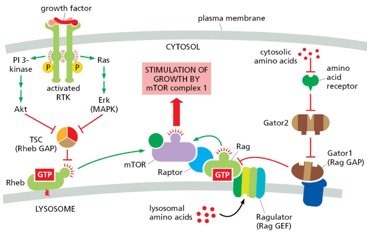
mTORC1 (mechanistic target of rapamycin complex 1) activation at lysosomes is a critical step in the regulation of cell growth, metabolism, and autophagy. Lysosomes serve as signaling platforms for mTORC1 activation in response to various environmental cues, including amino acids, growth factors, and cellular energy status. Here’s how mTORC1 is activated at lysosomes:
Amino Acid Sensing: Amino acids, particularly essential amino acids such as leucine, arginine, and glutamine, are potent activators of mTORC1 signaling. Upon amino acid stimulation, a series of events occur at the lysosomal surface to promote mTORC1 activation.
Rag GTPases: The Rag GTPases, consisting of RagA/B and RagC/D heterodimers, play a central role in amino acid sensing and mTORC1 activation at lysosomes. Rag GTPases are anchored to the lysosomal membrane and function as molecular switches that regulate the recruitment of mTORC1 to lysosomes in response to amino acid availability.
Ragulator Complex: The Rag GTPases are regulated by the Ragulator complex, a pentameric protein complex associated with the lysosomal surface. The Ragulator complex acts as a guanine nucleotide exchange factor (GEF) for RagA/B, promoting their activation in the presence of amino acids.
Rag-mTORC1 Interaction: Activated Rag GTPases recruit mTORC1 to the lysosomal surface by interacting with the RAPTOR subunit of mTORC1. The interaction between Rag GTPases and mTORC1 is facilitated by the cytosolic scaffold protein folliculin-interacting protein 1 (FNIP1) and its homolog FNIP2.
Rheb-GTP Loading: Once recruited to the lysosomes, mTORC1 becomes activated by the small GTPase Ras homolog enriched in brain (Rheb). Rheb is a potent activator of mTORC1 and is localized to the lysosomal membrane in its active, GTP-bound state. Rheb-GTP directly binds to and activates mTORC1, leading to its phosphorylation and activation.
Downstream Signaling: Activated mTORC1 phosphorylates a multitude of downstream targets involved in protein synthesis, lipid metabolism, and autophagy regulation, thereby coordinating cellular responses to nutrient availability and growth signals.
7.1.4 Receptor Tyroskine Kinase Activation
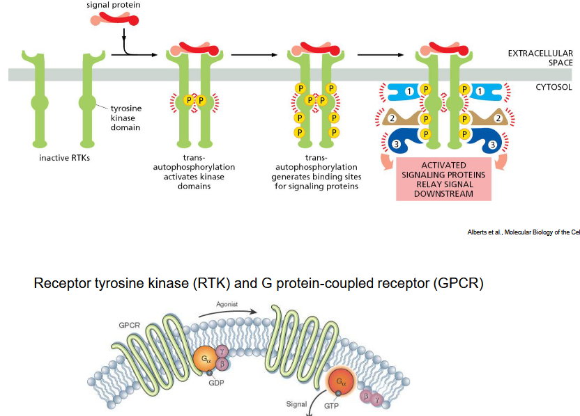
Receptor tyrosine kinases (RTKs) are cell surface receptors that play crucial roles in signal transduction by initiating intracellular signaling cascades in response to extracellular stimuli such as growth factors, hormones, and cytokines. RTK activation typically occurs through dimerization, a process where two receptor molecules come together to form a functional complex. Here’s how RTK activation by dimerization works:
Ligand Binding: RTKs have an extracellular ligand-binding domain that interacts with specific ligands, such as growth factors or hormones, in the extracellular space. Ligand binding induces a conformational change in the receptor, leading to the formation of an active signaling state.
Receptor Dimerization: Ligand binding promotes the association of two RTK monomers, either by bringing pre-existing receptors into close proximity or by inducing receptor clustering on the cell surface. This dimerization event can occur in various configurations, including homodimerization (two identical receptor monomers) or heterodimerization (two different receptor monomers).
Transphosphorylation: Upon dimerization, the intracellular tyrosine kinase domains of the RTK monomers become juxtaposed, allowing for cross-phosphorylation of specific tyrosine residues within the kinase activation loop of the opposing receptor. This transphosphorylation event leads to the activation of the RTK’s intrinsic kinase activity.
Recruitment of Signaling Molecules: Phosphorylated tyrosine residues on the activated RTK serve as docking sites for various cytoplasmic signaling molecules containing Src homology 2 (SH2) or phosphotyrosine-binding (PTB) domains. These signaling molecules, such as adaptor proteins and enzymes, are recruited to the phosphorylated RTKs, where they become activated or modulate downstream signaling cascades.
Initiation of Downstream Signaling: The recruitment and activation of downstream signaling molecules at the activated RTKs initiate intracellular signaling cascades that propagate the signal from the cell surface to the nucleus. These signaling pathways regulate diverse cellular processes, including cell proliferation, survival, differentiation, and metabolism, depending on the specific RTK and its associated signaling partners.
7.1.5 PI3K-AKT-mTOR Signalling Pathway
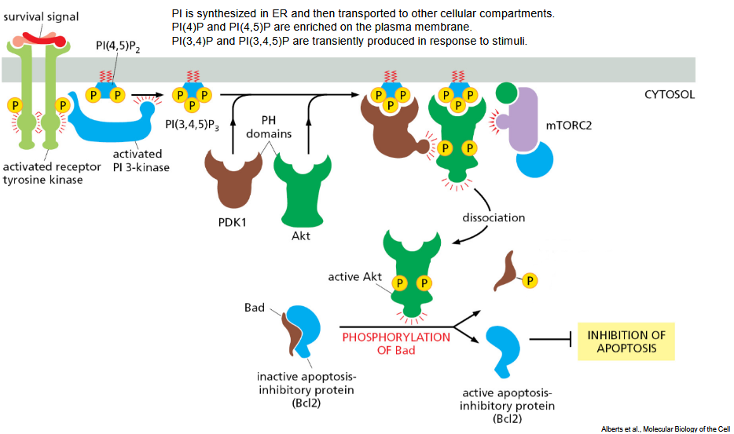
The PI3K-AKT-mTOR signaling pathway is a key intracellular signaling pathway involved in the regulation of various cellular processes, including cell growth, proliferation, survival, metabolism, and protein synthesis. Here’s an overview of how this pathway operates:
Activation of PI3K: The pathway is initiated by the activation of phosphoinositide 3-kinase (PI3K) in response to extracellular stimuli such as growth factors (e.g., insulin, insulin-like growth factor 1, epidermal growth factor). Upon ligand binding to their respective receptor tyrosine kinases (RTKs), PI3K is recruited to the plasma membrane, where it phosphorylates phosphatidylinositol 4,5-bisphosphate (PIP2) to generate phosphatidylinositol 3,4,5-trisphosphate (PIP3).
Activation of AKT: PIP3 serves as a second messenger that recruits AKT (also known as protein kinase B) to the plasma membrane via its pleckstrin homology (PH) domain. Once localized to the membrane, AKT is phosphorylated and activated by phosphoinositide-dependent kinase 1 (PDK1) at threonine 308. Full activation of AKT also requires phosphorylation at serine 473, which can be mediated by mTOR complex 2 (mTORC2) or other kinases.
AKT-Mediated Signaling: Activated AKT phosphorylates and regulates numerous downstream targets involved in various cellular processes. Some of the key targets of AKT include:
- mTORC1: AKT activates mTORC1 by phosphorylating and inhibiting tuberous sclerosis complex 2 (TSC2), leading to the activation of mTORC1 and subsequent stimulation of protein synthesis and cell growth.
- Glycogen synthase kinase 3 (GSK3): AKT phosphorylates and inhibits GSK3, which regulates glycogen synthesis, protein translation, and cell survival.
- Bad: AKT phosphorylates and inactivates the pro-apoptotic protein Bad, preventing its association with anti-apoptotic Bcl-2 family members and promoting cell survival.
- FOXO transcription factors: AKT phosphorylates FOXO transcription factors, leading to their cytoplasmic sequestration and inhibition of their transcriptional activity, which regulates genes involved in apoptosis, cell cycle arrest, and oxidative stress response.
mTOR Signaling: The activation of mTORC1 by AKT leads to the phosphorylation and activation of downstream effectors such as ribosomal protein S6 kinase 1 (S6K1) and eukaryotic initiation factor 4E-binding protein 1 (4E-BP1). Activation of these effectors promotes protein synthesis, ribosome biogenesis, and cell growth.
Cellular Responses: The PI3K-AKT-mTOR signaling pathway regulates various cellular processes in response to extracellular cues, including cell growth, proliferation, survival, metabolism, and protein synthesis. Dysregulation of this pathway is implicated in numerous diseases, including cancer, diabetes, and neurological disorders.
7.1.6 Insulin and Glucose Uptake
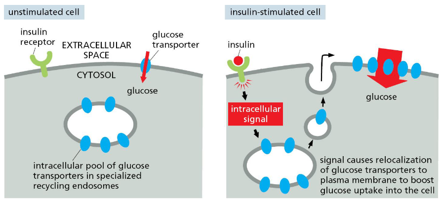
Insulin plays a central role in the regulation of glucose uptake by cells, particularly in skeletal muscle, adipose tissue, and liver. Here’s how insulin facilitates glucose uptake:
Insulin Secretion: After a meal, blood glucose levels rise, triggering the secretion of insulin from pancreatic beta cells. Insulin acts as a hormone that signals cells to take up glucose from the bloodstream.
Insulin Receptor Activation: Insulin binds to its receptor, the insulin receptor (IR), which is a receptor tyrosine kinase located on the cell surface of target cells. Binding of insulin to the IR leads to autophosphorylation and activation of the receptor’s tyrosine kinase activity.
Insulin Signaling Cascade: Activated insulin receptors phosphorylate intracellular substrates, including insulin receptor substrate proteins (IRS), which serve as docking sites for downstream signaling molecules. Phosphorylated IRS proteins recruit and activate phosphoinositide 3-kinase (PI3K), initiating a signaling cascade.
Activation of GLUT4 Translocation: PI3K activation leads to the phosphorylation and activation of protein kinase B (AKT), which in turn phosphorylates and activates AS160 (Akt substrate of 160 kDa). Phosphorylated AS160 facilitates the translocation of glucose transporter 4 (GLUT4) vesicles from intracellular storage compartments to the cell membrane.
Glucose Uptake: Upon translocation to the cell membrane, GLUT4 facilitates the uptake of glucose from the extracellular space into the cytoplasm of target cells. In skeletal muscle and adipose tissue, this process significantly increases glucose uptake, allowing cells to utilize glucose for energy production or storage as glycogen or fat.
Glucose Metabolism: Once inside the cell, glucose undergoes metabolism through glycolysis, the tricarboxylic acid (TCA) cycle, and oxidative phosphorylation to produce ATP, the cell’s primary energy source. Additionally, glucose can be stored as glycogen in the liver and muscle or converted to fatty acids for storage in adipose tissue.
7.2 Telomeres and Aging
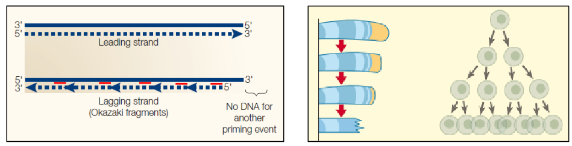
Cellular senescence is a phenomenon where cells undergo irreversible growth arrest in response to various stressors, such as DNA damage, telomere shortening, oxidative stress, or oncogenic signaling. One of the key mechanisms underlying cellular senescence is the “end-replication problem.”
The end-replication problem refers to the inability of DNA polymerases to fully replicate the ends of linear chromosomes during DNA replication. In eukaryotic cells, chromosomes are capped by structures called telomeres, which consist of repetitive DNA sequences and associated proteins. Telomeres play a crucial role in protecting the integrity of chromosomes and preventing the loss of genetic information during DNA replication.
During each round of DNA replication, the DNA polymerase complex synthesizes new DNA strands in the 5’ to 3’ direction. However, due to the nature of DNA polymerases and the absence of a primer at the end of the template strand, the replication machinery is unable to replicate the extreme ends of linear chromosomes completely. As a result, with each round of cell division, telomeres progressively shorten.
Telomere shortening serves as a “mitotic clock” that limits the replicative lifespan of cells. When telomeres become critically short, they lose their protective function, leading to the activation of DNA damage response pathways and triggering cellular senescence. Additionally, dysfunctional telomeres can undergo inappropriate DNA repair mechanisms, resulting in genomic instability and promoting oncogenic transformation.
Cellular senescence mediated by the end-replication problem serves as a tumor suppressive mechanism by preventing the proliferation of cells with damaged or unstable genomes. However, excessive accumulation of senescent cells over time contributes to aging and age-related diseases, as senescent cells secrete pro-inflammatory cytokines, growth factors, and proteases collectively known as the senescence-associated secretory phenotype (SASP), which can disrupt tissue homeostasis and promote chronic inflammation.
7.2.1 End Replication by Telomerase
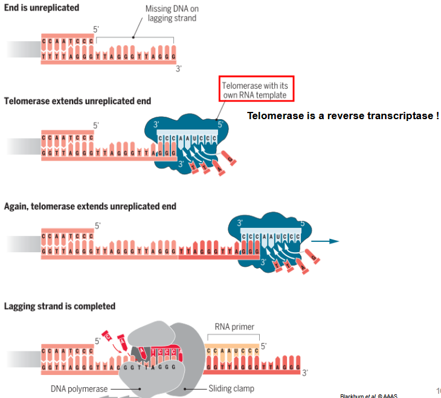
Telomerase is a specialized enzyme that counteracts the end-replication problem by adding repetitive DNA sequences to the ends of linear chromosomes, known as telomeres. Telomerase activity is particularly important in cells with high proliferative capacity, such as stem cells and cancer cells, as it helps maintain telomere length and ensures genomic stability during repeated rounds of cell division.
Here’s how telomerase mediates the end-replication process:
Telomere Structure: Telomeres consist of repetitive DNA sequences (TTAGGG in humans) and associated proteins that cap the ends of linear chromosomes. Telomeres protect chromosome ends from degradation and prevent them from being recognized as DNA breaks by the cellular DNA repair machinery.
Telomerase Enzyme: Telomerase is a ribonucleoprotein complex composed of two main components: a catalytic protein subunit called telomerase reverse transcriptase (TERT) and an RNA component called telomerase RNA (TERC). TERC serves as a template for the synthesis of telomeric DNA by TERT.
Extension of Telomeres: During DNA replication, the lagging strand of the chromosome cannot be fully replicated due to the end-replication problem. Telomerase acts to extend the telomeres by adding repetitive DNA sequences to the 3’ end of the lagging strand.
Telomerase Action: Telomerase extends telomeres in a processive manner by using the RNA template within TERC to synthesize repetitive telomeric DNA sequences onto the chromosome ends. This elongation process compensates for the telomere shortening that occurs during each round of DNA replication.
Telomere Length Maintenance: By counteracting telomere shortening, telomerase helps maintain telomere length and prevents telomeres from becoming critically short. This ensures the stability of linear chromosomes and promotes cell proliferation and genomic integrity.
Role in Stem Cells and Cancer: Telomerase activity is particularly high in stem cells and cancer cells, where it helps maintain telomere length and sustains the replicative capacity of these cells. In cancer cells, upregulation of telomerase activity allows for unlimited cell proliferation, contributing to tumor growth and progression.
7.2.2 DNA Damage Response
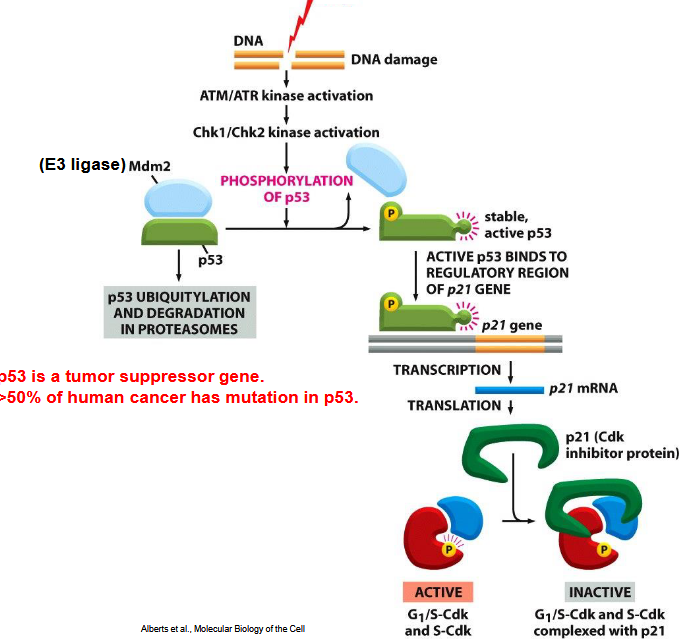
The DNA damage response (DDR) is a complex network of signaling pathways that detects and repairs damaged DNA, maintaining genomic stability and preventing the accumulation of mutations that can lead to diseases such as cancer. The DDR involves a series of coordinated molecular events that are activated in response to various types of DNA damage, including DNA double-strand breaks (DSBs), single-strand breaks (SSBs), cross-links, and base modifications. Here’s an overview of the key components and processes involved in the DDR:
Detection of DNA Damage: DNA damage is detected by sensor proteins that recognize specific types of lesions or abnormalities in the DNA structure. These sensor proteins include the MRN complex (MRE11-RAD50-NBS1), Ku70/Ku80 heterodimer, PARP1 (poly(ADP-ribose) polymerase 1), and various DNA damage checkpoint proteins.
Activation of Checkpoint Signaling: Upon detection of DNA damage, sensor proteins activate checkpoint signaling pathways to halt the cell cycle and prevent the propagation of damaged DNA to daughter cells. Key checkpoint kinases involved in this process include ATM (ataxia telangiectasia mutated), ATR (ataxia telangiectasia and Rad3-related), and DNA-PK (DNA-dependent protein kinase).
Transduction of DNA Damage Signals: Activated checkpoint kinases phosphorylate downstream effector proteins, including CHK1 and CHK2, which in turn phosphorylate a variety of target proteins involved in cell cycle regulation, DNA repair, and apoptosis. Phosphorylation of these effector proteins leads to the activation of DNA damage response pathways and the initiation of appropriate cellular responses.
DNA Repair Pathways: The DDR coordinates several DNA repair pathways to remove or repair damaged DNA lesions, including:
- Non-homologous end joining (NHEJ): Repairs DNA DSBs by directly ligating broken DNA ends together. NHEJ is error-prone and can lead to the introduction of small insertions or deletions.
- Homologous recombination (HR): Repairs DNA DSBs using an undamaged sister chromatid or homologous DNA sequence as a template. HR is a high-fidelity repair pathway that restores the original DNA sequence.
- Base excision repair (BER): Repairs damaged DNA bases and single-strand breaks by excising the damaged nucleotide and replacing it with a new one.
- Nucleotide excision repair (NER): Repairs bulky DNA lesions, such as UV-induced thymine dimers or chemical adducts, by removing a short stretch of nucleotides surrounding the lesion and replacing it with newly synthesized DNA.
Cellular Responses: Depending on the extent and type of DNA damage, cells may undergo various responses, including cell cycle arrest, DNA repair, senescence, or apoptosis. These responses are critical for maintaining genomic integrity and preventing the propagation of damaged DNA to daughter cells.
7.2.3 Shelterin
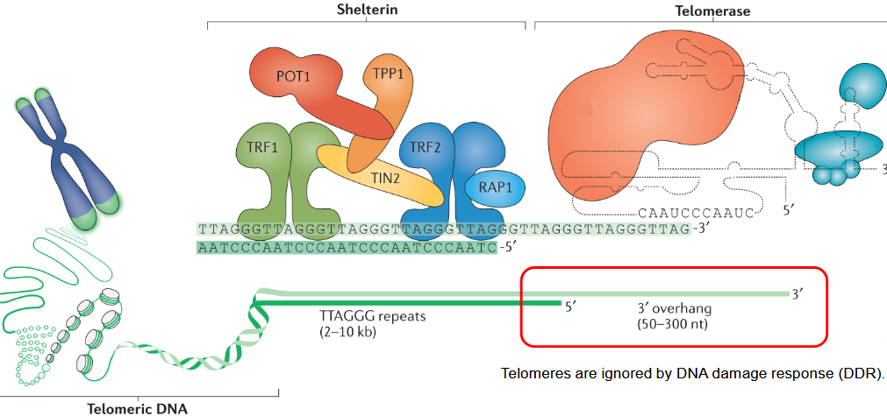
Shelterin is a protein complex that plays a critical role in protecting and regulating the structure of telomeres, the repetitive DNA sequences located at the ends of linear chromosomes. Telomeres function to maintain chromosome stability by preventing the ends of chromosomes from being recognized as DNA breaks and undergoing inappropriate DNA repair or degradation processes. Shelterin proteins bind to telomeric DNA and help to form a specialized nucleoprotein structure that shields telomeres from being recognized as damaged DNA.
The Shelterin complex consists of several key protein components, each with specific functions:
TRF1 (Telomeric Repeat-binding Factor 1) and TRF2 (Telomeric Repeat-binding Factor 2): TRF1 and TRF2 are DNA-binding proteins that specifically recognize and bind to double-stranded telomeric DNA. They play essential roles in forming and maintaining the structure of telomeres by facilitating the formation of higher-order telomeric loops, known as T-loops. TRF2 is particularly important for protecting telomeres from being recognized as DNA double-strand breaks and promoting telomere end-capping.
TIN2 (TRF1-interacting Nuclear factor 2): TIN2 serves as a central scaffold protein within the Shelterin complex, interacting with TRF1, TRF2, and other Shelterin components. TIN2 helps to stabilize the Shelterin complex and regulate its interactions with other proteins involved in telomere maintenance and DNA repair.
RAP1 (Repressor/activator Protein 1): RAP1 binds to the telomeric DNA sequence in a sequence-specific manner and interacts with TRF2. RAP1 plays a role in regulating telomere length and function, as well as in coordinating telomere maintenance with other cellular processes such as transcriptional regulation and DNA repair.
POT1 (Protection of Telomeres 1): POT1 binds specifically to the single-stranded DNA overhang present at the 3’ end of telomeres. POT1 protects telomeres from inappropriate DNA damage responses and regulates telomere length by interacting with telomerase and regulating its access to telomeric DNA.
TPP1 (Adrenocortical Dysplasia Homolog (ACD) Protein 1): TPP1 interacts with POT1 and TIN2 within the Shelterin complex and plays a crucial role in stabilizing POT1 binding to telomeric DNA. TPP1 also facilitates the recruitment and activation of telomerase at telomeres, promoting telomere elongation and maintenance.
7.2.3.1 Telomerase and Shelterin
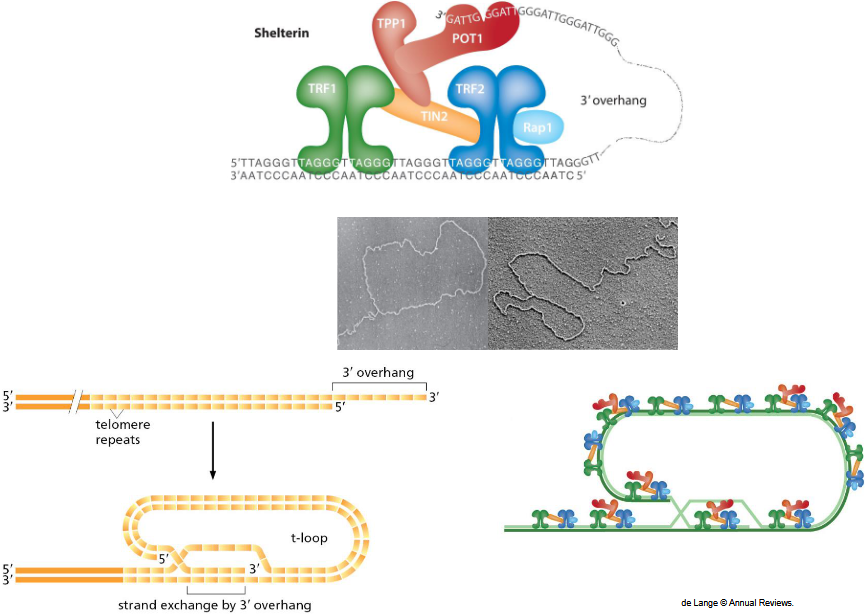
The telomere loop, or T-loop, is a specialized nucleoprotein structure that forms at the ends of linear chromosomes, where telomeric DNA sequences are located. The T-loop plays a crucial role in protecting chromosome ends from being recognized as DNA double-strand breaks and from undergoing inappropriate DNA repair processes. It consists of the single-stranded 3’ overhang of telomeric DNA invading and pairing with double-stranded telomeric DNA upstream, creating a looped structure.
Telomerase and Shelterin proteins work together to solve the end-replication problem and maintain telomere integrity:
Telomerase: Telomerase is a specialized enzyme that adds repetitive DNA sequences to the ends of chromosomes, compensating for the loss of telomeric DNA during each round of DNA replication. Telomerase contains an RNA component (TERC) that serves as a template for synthesizing telomeric DNA and a catalytic protein component (TERT) that carries out the DNA synthesis reaction. By adding telomeric repeats to chromosome ends, telomerase helps counteract the gradual shortening of telomeres and ensures their stability.
Shelterin Complex: The Shelterin complex is a group of proteins that bind to telomeric DNA and help maintain the structural integrity of telomeres. Key components of the Shelterin complex include TRF1, TRF2, TIN2, RAP1, POT1, and TPP1. Shelterin proteins play essential roles in protecting telomeres from being recognized as DNA damage sites, regulating telomere length, and coordinating telomere maintenance with other cellular processes.
Together, telomerase and Shelterin proteins collaborate to solve the end-replication problem and maintain telomere stability. Telomerase adds telomeric repeats to chromosome ends, counteracting telomere shortening, while Shelterin proteins help form and stabilize the T-loop structure, preventing chromosome ends from being recognized as DNA breaks and protecting them from inappropriate DNA repair mechanisms.
7.2.4 Cellular Senescence
 aging.png){fig-align=‘center’ width=506}
aging.png){fig-align=‘center’ width=506}
Cellular senescence is a process in which cells undergo irreversible growth arrest in response to various stressors, such as DNA damage, telomere shortening, oncogene activation, or oxidative stress. Senescent cells display distinct phenotypic changes, including altered gene expression patterns, increased secretion of inflammatory cytokines and growth factors (known as the senescence-associated secretory phenotype or SASP), and changes in cell morphology.
One of the key triggers for cellular senescence is telomere shortening. Telomeres are repetitive DNA sequences located at the ends of linear chromosomes, and they protect chromosome ends from degradation and fusion with neighboring chromosomes. During each round of cell division, telomeres undergo gradual shortening due to the end-replication problem, where DNA polymerases are unable to fully replicate the ends of linear chromosomes.
In normal somatic cells, telomerase activity is typically repressed or downregulated, leading to progressive telomere shortening with each cell division. Eventually, telomeres become critically short, triggering a DNA damage response and cellular senescence. This downregulation of telomerase expression in somatic cells serves as a tumor suppressive mechanism, as it limits the proliferative potential of cells and prevents the accumulation of genetic mutations that could lead to cancer.
The regulation of telomerase expression in somatic cells is complex and involves multiple factors, including epigenetic modifications, transcriptional regulation, and telomere-associated proteins. Various signaling pathways, such as the p53/p21 and p16INK4a/Rb pathways, play important roles in controlling telomerase expression and cellular senescence. For example, activation of the p53 tumor suppressor pathway in response to DNA damage or other stress signals can lead to transcriptional repression of the TERT gene, which encodes the catalytic subunit of telomerase.
7.2.5 Shelterin and Non-Homologous End Joining
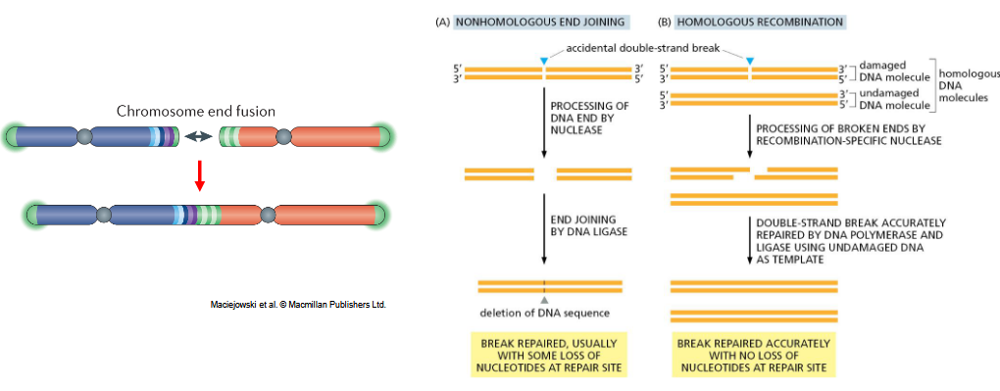
Telomeres play a critical role in maintaining genomic stability by protecting chromosome ends from being recognized as DNA double-strand breaks (DSBs) and undergoing inappropriate DNA repair mechanisms. Dysfunctional telomeres, resulting from excessive shortening or loss of telomeric proteins, can lead to genome instability and contribute to the development of cancer.
The Shelterin complex, comprised of several key proteins including TRF1, TRF2, TIN2, RAP1, POT1, and TPP1, is essential for maintaining telomere integrity and function. Shelterin proteins bind to telomeric DNA and help form a specialized nucleoprotein structure that protects chromosome ends. One of the critical functions of Shelterin is to prevent non-homologous end joining (NHEJ) at telomeres.
NHEJ is an error-prone DNA repair pathway that directly ligates broken DNA ends together, often resulting in the loss or addition of nucleotides and potentially leading to chromosomal rearrangements or deletions. At dysfunctional telomeres, NHEJ-mediated repair can result in telomere fusion, chromosome end-to-end fusions, or other chromosomal abnormalities, all of which contribute to genome instability and promote tumorigenesis.
Shelterin proteins help prevent NHEJ at telomeres through several mechanisms:
TRF2-Mediated Protection: TRF2 plays a key role in protecting telomeres from being recognized as DSBs and inhibiting the activation of the DNA damage response (DDR) at chromosome ends. By forming a protective cap at telomeres, TRF2 prevents the binding of NHEJ factors and blocks the initiation of inappropriate DNA repair processes.
Inhibition of Ku70/Ku80: The Ku70/Ku80 heterodimer is a critical component of the NHEJ pathway and is involved in DNA end recognition and tethering during repair. Shelterin proteins, particularly TRF2, have been shown to inhibit the recruitment and function of Ku70/Ku80 at telomeres, thereby preventing NHEJ-mediated repair.
Shelterin-Mediated Sequestration: Shelterin proteins help maintain the structural integrity of telomeres and promote the formation of higher-order nucleoprotein structures, such as the T-loop. These structures sequester the chromosome end and prevent it from being recognized as a DNA break, thereby minimizing the likelihood of NHEJ-mediated repair.